Isosceles TrapezoidsHình thang cân
Grade 8 · Topic: QuadrilateralsLớp 8 · Chủ đề: Tứ giác
1Lesson IntroductionGiới thiệu bài học
Learning goalsMục tiêu bài học
By the end of this lesson you can:
Sau bài học này, em có thể:
recognize a trapezoid, its bases, legs and height; recognize an isosceles trapezoid;
nhận biết được hình thang, đáy, cạnh bên, đường cao; nhận biết hình thang cân;
use the properties of an isosceles trapezoid (equal legs, equal diagonals, equal base angles);
sử dụng được tính chất của hình thang cân (hai cạnh bên bằng nhau, hai đường chéo bằng nhau, hai góc kề một đáy bằng nhau);
use the tests to show that a trapezoid is isosceles.
dùng được dấu hiệu để chứng minh một hình thang là hình thang cân.
2Mathematical VocabularyTừ vựng Toán học
trapezoid – a quadrilateral with two parallel opposite sides.
Hình thang – tứ giác có hai cạnh đối song song.
base / leg – the parallel sides are the bases; the other two sides are the legs.
Đáy / cạnh bên – hai cạnh song song là hai đáy; hai cạnh còn lại là hai cạnh bên.
height – a segment from a point of one base perpendicular to the other base.
Đường cao – đoạn thẳng kẻ từ một điểm của đáy này vuông góc với đáy kia.
isosceles trapezoid – a trapezoid with two equal base angles.
Hình thang cân – hình thang có hai góc kề một đáy bằng nhau.
base angle – an angle adjacent to a base.
Góc kề một đáy – góc tạo bởi một đáy và một cạnh bên.
right trapezoid – a trapezoid with a right angle.
Hình thang vuông – hình thang có một góc vuông.
3Useful English PhrasesCụm từ tiếng Anh thường gặp
Use the figure to identify the bases and legs of trapezoid \(ABCD\).
Dựa vào hình, chỉ ra hai đáy và hai cạnh bên của hình thang \(ABCD\).
Name the two pairs of base angles of trapezoid \(PQRS\).
Kể tên hai cặp góc kề một đáy của hình thang \(PQRS\).
Determine whether trapezoid \(JKLM\) is isosceles.
Xác định hình thang \(JKLM\) có phải hình thang cân không.
The legs \(AD\) and \(BC\) have equal lengths. The diagonals \(AC\) and \(BD\) have equal lengths.
Hai cạnh bên \(AD\), \(BC\) bằng nhau. Hai đường chéo \(AC\), \(BD\) bằng nhau.
\(AB\parallel CD\) is read "line \(AB\) is parallel to line \(CD\)"; \(AH\perp CD\) "line \(AH\) is perpendicular to line \(CD\)".
Cách đọc: \(AB\parallel CD\) – \(AB\) song song với \(CD\); \(AH\perp CD\) – \(AH\) vuông góc với \(CD\).
4Prerequisite ReviewÔn tập kiến thức nền
Parallel lines (grade 7). If \(AB\parallel CD\), the two angles along a transversal on the same side add up to \(180^\circ\).
Hai đường thẳng song song (lớp 7). Nếu \(AB\parallel CD\) thì hai góc trong cùng phía tạo bởi một cát tuyến có tổng \(180^\circ\).
5TheoryLý thuyết
5.1 TrapezoidsHình thang
DefinitionĐịnh nghĩa
A trapezoid is a quadrilateral with two parallel opposite sides (the bases). The other two sides are the legs. A segment perpendicular to both bases is a height.
Hình thang là tứ giác có hai cạnh đối song song (gọi là hai đáy); hai cạnh còn lại là hai cạnh bên; đoạn vuông góc với hai đáy là đường cao.
In trapezoid \(ABCD\) (\(AB\parallel CD\)), the two angles along a leg are supplementary: \(\widehat{A}+\widehat{D}=180^\circ\), \(\widehat{B}+\widehat{C}=180^\circ\).
Trong hình thang \(ABCD\) (\(AB\parallel CD\)), hai góc kề một cạnh bên bù nhau: \(\widehat{A}+\widehat{D}=180^\circ\), \(\widehat{B}+\widehat{C}=180^\circ\).
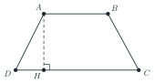
5.2 Isosceles trapezoidsHình thang cân
Definition and propertiesĐịnh nghĩa và tính chất
An isosceles trapezoid is a trapezoid with two equal angles adjacent to one base: \(\widehat{C}=\widehat{D}\) (then also \(\widehat{A}=\widehat{B}\)).
Hình thang cân là hình thang có hai góc kề một đáy bằng nhau: \(\widehat{C}=\widehat{D}\) (khi đó cũng có \(\widehat{A}=\widehat{B}\)).
Properties: the two legs are equal (\(AD=BC\)); the two diagonals are equal (\(AC=BD\)).
Tính chất: hai cạnh bên bằng nhau (\(AD=BC\)); hai đường chéo bằng nhau (\(AC=BD\)).
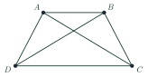
TestsDấu hiệu nhận biết
A trapezoid is isosceles if it has two equal angles adjacent to one base, or if its diagonals are equal.
Hình thang có hai góc kề một đáy bằng nhau, hoặc có hai đường chéo bằng nhau, là hình thang cân.
Watch out!Lưu ý
A trapezoid with two equal legs is not always isosceles: a parallelogram also has equal "legs".
Hình thang có hai cạnh bên bằng nhau chưa chắc là hình thang cân: hình bình hành cũng có hai cạnh bên bằng nhau.
6Worked ExamplesVí dụ có lời giải
ExampleVí dụ 1RememberingNhận biết – Bases, legs, heightĐáy, cạnh bên, đường cao
In the figure of trapezoid \(ABCD\) above (\(AB\parallel CD\), \(AH\perp CD\)), name the bases, the legs and a height.
Trong hình thang \(ABCD\) ở hình trên (\(AB\parallel CD\), \(AH\perp CD\)), hãy chỉ ra hai đáy, hai cạnh bên và một đường cao.
Analysis: Bases are the parallel sides.
Phân tích: Hai đáy là hai cạnh song song.
Bases: \(AB\), \(CD\). Legs: \(AD\), \(BC\). Height: \(AH\).
Hai đáy: \(AB\), \(CD\). Hai cạnh bên: \(AD\), \(BC\). Đường cao: \(AH\).
Bases \(AB, CD\); legs \(AD, BC\); height \(AH\).
Đáy \(AB, CD\); cạnh bên \(AD, BC\); đường cao \(AH\).
ExampleVí dụ 2UnderstandingThông hiểu – Angles of a trapezoidGóc của hình thang
Trapezoid \(ABCD\) has \(AB\parallel CD\), \(\widehat{A}=110^\circ\), \(\widehat{B}=60^\circ\). Find \(\widehat{C}\) and \(\widehat{D}\).
Hình thang \(ABCD\) có \(AB\parallel CD\), \(\widehat{A}=110^\circ\), \(\widehat{B}=60^\circ\). Tính \(\widehat{C}\) và \(\widehat{D}\).
Analysis: Angles along a leg are supplementary.
Phân tích: Hai góc kề một cạnh bên bù nhau.
\(\widehat{D}=180^\circ-110^\circ=70^\circ\); \(\widehat{C}=180^\circ-60^\circ=120^\circ\).
\(\widehat{D}=180^\circ-110^\circ=70^\circ\); \(\widehat{C}=180^\circ-60^\circ=120^\circ\).
\(\widehat{C}=120^\circ,\ \widehat{D}=70^\circ\).
\(\widehat{C}=120^\circ,\ \widehat{D}=70^\circ\).
ExampleVí dụ 3UnderstandingThông hiểu – Angles of an isosceles trapezoidGóc của hình thang cân
Isosceles trapezoid \(EFGH\) has bases \(EF\) and \(GH\), and \(\widehat{EHG}=68^\circ\). Find the other angles.
Hình thang cân \(EFGH\) có hai đáy \(EF\), \(GH\) và \(\widehat{EHG}=68^\circ\). Tính các góc còn lại.
Analysis: Equal base angles, supplementary angles along a leg.
Phân tích: Hai góc kề một đáy bằng nhau, hai góc kề một cạnh bên bù nhau.
\(\widehat{G}=\widehat{H}=68^\circ\).
\(\widehat{G}=\widehat{H}=68^\circ\).
\(\widehat{E}=\widehat{F}=180^\circ-68^\circ=112^\circ\).
\(\widehat{E}=\widehat{F}=180^\circ-68^\circ=112^\circ\).
\(\widehat{G}=68^\circ,\ \widehat{E}=\widehat{F}=112^\circ\).
\(\widehat{G}=68^\circ,\ \widehat{E}=\widehat{F}=112^\circ\).
ExampleVí dụ 4Basic applicationVận dụng thấp – Cutting an isosceles triangleCắt tam giác cân
Triangle \(RST\) has \(RS=RT\) and \(\widehat{S}=70^\circ\). Points \(U\in RS\), \(V\in RT\) with \(UV\parallel ST\). Show that \(UVTS\) is an isosceles trapezoid and find its angles.
Tam giác \(RST\) có \(RS=RT\), \(\widehat{S}=70^\circ\). Lấy \(U\in RS\), \(V\in RT\) sao cho \(UV\parallel ST\). Chứng minh \(UVTS\) là hình thang cân và tính các góc của nó.
Analysis: A trapezoid with equal base angles is isosceles.
Phân tích: Hình thang có hai góc kề một đáy bằng nhau là hình thang cân.
\(UV\parallel ST\), so \(UVTS\) is a trapezoid; \(\widehat{S}=\widehat{T}=70^\circ\) (isosceles triangle), so it is an isosceles trapezoid.
\(UV\parallel ST\) nên \(UVTS\) là hình thang; \(\widehat{S}=\widehat{T}=70^\circ\) (tam giác cân) nên nó là hình thang cân.
\(\widehat{SUV}=\widehat{TVU}=180^\circ-70^\circ=110^\circ\).
\(\widehat{SUV}=\widehat{TVU}=180^\circ-70^\circ=110^\circ\).
\(70^\circ,\ 70^\circ,\ 110^\circ,\ 110^\circ\).
Các góc: \(70^\circ,\ 70^\circ,\ 110^\circ,\ 110^\circ\).
ExampleVí dụ 5ApplicationVận dụng – A bridge frameKhung cầu đi bộ
The side frame of a pedestrian bridge is trapezoid \(ABCD\) with upper base \(AB=6\) m, lower base \(CD=11\) m, \(\widehat{C}=\widehat{D}=60^\circ\) and \(AD=5\) m. Find \(\widehat{A}\) and the total length of steel for the four sides.
Khung một mặt bên của cầu đi bộ là hình thang \(ABCD\) với đáy trên \(AB=6\) m, đáy dưới \(CD=11\) m, \(\widehat{C}=\widehat{D}=60^\circ\), \(AD=5\) m. Tính \(\widehat{A}\) và tổng chiều dài thép làm bốn cạnh của khung.
Analysis: Equal angles at the lower base → isosceles trapezoid.
Phân tích: Hai góc kề đáy dưới bằng nhau → hình thang cân.
\(\widehat{A}=180^\circ-60^\circ=120^\circ\); the trapezoid is isosceles, so \(BC=AD=5\) m.
\(\widehat{A}=180^\circ-60^\circ=120^\circ\); hình thang cân nên \(BC=AD=5\) m.
Total length: \(6+11+5+5=27\) m.
Tổng chiều dài: \(6+11+5+5=27\) m.
\(\widehat{A}=120^\circ\); 27 m of steel.
\(\widehat{A}=120^\circ\); cần 27 m thép.
7PracticeBài tập luyện tập
A. Multiple ChoiceA. Trắc nghiệm nhiều lựa chọn
Isosceles trapezoid \(IJKL\) has bases \(IJ\) and \(KL\), and \(\widehat{I}=136^\circ\). Find the other angles.
Hình thang cân \(IJKL\) có hai đáy \(IJ\), \(KL\) và \(\widehat{I}=136^\circ\). Tính các góc còn lại.
Answer: a. Base angles are equal: \(\widehat{J}=\widehat{I}\); angles along a leg are supplementary: \(\widehat{L}=180^\circ-136^\circ=44^\circ\).
Đáp án a. Hai góc kề một đáy bằng nhau: \(\widehat{J}=\widehat{I}\); hai góc kề một cạnh bên bù nhau: \(\widehat{L}=180^\circ-136^\circ=44^\circ\).
Trapezoid \(IJKL\) has \(IJ\parallel KL\) and \(\widehat{I}=120^\circ\). Find \(\widehat{L}\).
Hình thang \(IJKL\) có \(IJ\parallel KL\) và \(\widehat{I}=120^\circ\). Tính \(\widehat{L}\).
Answer: b. \(\widehat{I}\) and \(\widehat{L}\) are angles along leg \(IL\), so they are supplementary.
Đáp án b. \(\widehat{I}\) và \(\widehat{L}\) là hai góc kề cạnh bên \(IL\) nên bù nhau.
Which statement is NOT true for every isosceles trapezoid?
Khẳng định nào KHÔNG đúng với mọi hình thang cân?
Answer: d. An isosceles trapezoid has equal legs, equal diagonals and equal base angles.
Đáp án d. Hình thang cân có hai cạnh bên bằng nhau, hai đường chéo bằng nhau, hai góc kề một đáy bằng nhau.
B. True or FalseB. Đúng hoặc sai
In every isosceles trapezoid, its two bases are equal.
Trong mọi hình thang cân, hai đáy bằng nhau.
False. Properties: equal legs, equal diagonals, equal base angles.
Sai. Tính chất: hai cạnh bên bằng nhau, hai đường chéo bằng nhau, hai góc kề một đáy bằng nhau.
Trapezoid \(MNPQ\) (\(MN\parallel PQ\)) has \(MQ=NP\). Then it must be an isosceles trapezoid.
Hình thang \(MNPQ\) (\(MN\parallel PQ\)) có \(MQ=NP\). Khi đó nó chắc chắn là hình thang cân.
False. Tests: equal diagonals, or equal angles at one base. Equal legs are not enough (a parallelogram also has equal legs).
Sai. Dấu hiệu: hai đường chéo bằng nhau, hoặc hai góc kề một đáy bằng nhau. Hai cạnh bên bằng nhau thì chưa đủ (hình bình hành cũng có).
C. Short AnswerC. Trả lời ngắn
Isosceles trapezoid \(KLMN\) (\(KL\parallel MN\)) has \(\widehat{L}=79^\circ\). Find \(\widehat{N}\) in degrees.
Hình thang cân \(KLMN\) (\(KL\parallel MN\)) có \(\widehat{L}=79^\circ\). Tính số đo \(\widehat{N}\) (theo độ).
Enter a number.
Nhập một số.
Answer: 101. \(\widehat{K}=\widehat{L}=79^\circ\), so \(\widehat{N}=180^\circ-79^\circ=101^\circ\).
Đáp số: 101. \(\widehat{K}=\widehat{L}=79^\circ\) nên \(\widehat{N}=180^\circ-79^\circ=101^\circ\).
Isosceles trapezoid \(WXYZ\) has bases \(WX=8\) cm, \(YZ=4\) cm and leg \(WZ=6\) cm. Find its perimeter (cm).
Hình thang cân \(WXYZ\) có hai đáy \(WX=8\) cm, \(YZ=4\) cm và cạnh bên \(WZ=6\) cm. Tính chu vi của hình thang (cm).
Enter a number.
Nhập một số.
Answer: 24. \(XY=WZ=6\), perimeter \(=8+4+2\cdot6=24\).
Đáp số: 24. \(XY=WZ=6\), chu vi \(=8+4+2\cdot6=24\).
D1. Self-practice – RememberingD1. Tự luyện – Mức Nhận biết
In trapezoid \(PQRS\) (\(PQ\parallel RS\)), which segments are the bases?
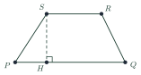
Trong hình thang \(PQRS\) (\(PQ\parallel RS\)), hai đáy là
Answer: d. The bases are the two parallel sides.
Đáp án d. Hai đáy là hai cạnh song song.
In trapezoid \(PQRS\) (\(PQ\parallel RS\)), which segment is a height?
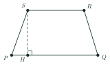
Trong hình thang \(PQRS\) (\(PQ\parallel RS\)), đoạn thẳng nào là một đường cao?
Answer: a. \(SH\perp PQ\).
Đáp án a. \(SH\perp PQ\).
Isosceles trapezoid \(IJKL\) (\(IJ\parallel KL\)) has \(IK=5\) cm. Find \(JL\).
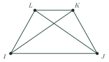
Hình thang cân \(IJKL\) (\(IJ\parallel KL\)) có \(IK=5\) cm. Tính \(JL\).
Answer: b. The diagonals of an isosceles trapezoid are equal.
Đáp án b. Hình thang cân có hai đường chéo bằng nhau.
D2. Self-practice – UnderstandingD2. Tự luyện – Mức Thông hiểu
Isosceles trapezoid \(IJKL\) (\(IJ\parallel KL\)) has \(\widehat{I}=(2x+35)^\circ\) and \(\widehat{J}=(5x-1)^\circ\). Find \(\widehat{I}\).
Hình thang cân \(IJKL\) (\(IJ\parallel KL\)) có \(\widehat{I}=(2x+35)^\circ\) và \(\widehat{J}=(5x-1)^\circ\). Tính \(\widehat{I}\).
Answer: b. Equal base angles: \(2x+35=5x-1\Rightarrow x=12\), so \(\widehat{I}=59^\circ\).
Đáp án b. Hai góc kề một đáy bằng nhau: \(2x+35=5x-1\Rightarrow x=12\), nên \(\widehat{I}=59^\circ\).
Trapezoid \(WXYZ\) (\(WX\parallel YZ\)) has \(\widehat{Z}-\widehat{W}=10^\circ\). Find \(\widehat{Z}\).
Hình thang \(WXYZ\) (\(WX\parallel YZ\)) có \(\widehat{Z}-\widehat{W}=10^\circ\). Tính \(\widehat{Z}\).
Answer: d. \(\widehat{Z}+\widehat{W}=180^\circ\) and their difference is \(10^\circ\): \(\widehat{Z}=(180^\circ+10^\circ):2=95^\circ\).
Đáp án d. \(\widehat{Z}+\widehat{W}=180^\circ\), hiệu bằng \(10^\circ\) nên \(\widehat{Z}=(180^\circ+10^\circ):2=95^\circ\).
Isosceles trapezoid \(WXYZ\) has perimeter 36 cm and bases 11 cm and 7 cm. Find the length of each leg.
Hình thang cân \(WXYZ\) có chu vi 36 cm, hai đáy dài 11 cm và 7 cm. Tính độ dài mỗi cạnh bên.
Answer: d. \((36-11-7):2=9\) cm.
Đáp án d. \((36-11-7):2=9\) cm.
D3. Self-practice – Basic applicationD3. Tự luyện – Mức Vận dụng thấp
Triangle \(RST\) has \(RS=RT\) and \(\widehat{S}=78^\circ\). Points \(U\in RS\), \(V\in RT\) with \(UV\parallel ST\). Quadrilateral \(UVTS\) is an isosceles trapezoid. Find \(\widehat{SUV}\).
Tam giác \(RST\) có \(RS=RT\) và \(\widehat{S}=78^\circ\). Lấy \(U\in RS\), \(V\in RT\) sao cho \(UV\parallel ST\). Tứ giác \(UVTS\) là hình thang cân. Tính \(\widehat{SUV}\).
Answer: d. \(UV\parallel ST\): \(\widehat{SUV}+\widehat{S}=180^\circ\Rightarrow\widehat{SUV}=102^\circ\).
Đáp án d. \(UV\parallel ST\) nên \(\widehat{SUV}+\widehat{S}=180^\circ\Rightarrow\widehat{SUV}=102^\circ\).
Trapezoid \(PQRS\) (\(PQ\parallel RS\)) has \(RS=4\) cm. Diagonal \(PR\) bisects \(\widehat{SPQ}\). Find \(SP\).
Hình thang \(PQRS\) (\(PQ\parallel RS\)) có \(RS=4\) cm, đường chéo \(PR\) là tia phân giác của \(\widehat{SPQ}\). Tính \(SP\).
Answer: d. \(\widehat{SRP}=\widehat{RPQ}\) (alternate angles) \(=\widehat{SPR}\), so \(\triangle PSR\) is isosceles: \(SP=RS=4\) cm.
Đáp án d. \(\widehat{SRP}=\widehat{RPQ}\) (so le trong) \(=\widehat{SPR}\) nên \(\triangle PSR\) cân tại \(S\): \(SP=RS=4\) cm.
Trapezoid \(IJKL\) (\(IJ\parallel KL\)) has \(\widehat{I}=(3x+40)^\circ\) and \(\widehat{L}=(2x+40)^\circ\). Find \(\widehat{I}\).
Hình thang \(IJKL\) (\(IJ\parallel KL\)) có \(\widehat{I}=(3x+40)^\circ\) và \(\widehat{L}=(2x+40)^\circ\). Tính \(\widehat{I}\).
Answer: a. \(\widehat{I}+\widehat{L}=180^\circ\Rightarrow 5x+80=180\Rightarrow x=20\); \(\widehat{I}=100^\circ\).
Đáp án a. \(\widehat{I}+\widehat{L}=180^\circ\Rightarrow 5x+80=180\Rightarrow x=20\); \(\widehat{I}=100^\circ\).
D4. Self-practice – Advanced applicationD4. Tự luyện – Mức Vận dụng
The side frame of a pedestrian bridge is trapezoid \(ABCD\) (\(AB\parallel CD\)) with \(\widehat{C}=\widehat{D}=60^\circ\), \(AB=12\) m, \(CD=20\) m, \(AD=8\) m. How many meters of steel are needed for its four sides?
Khung một mặt bên của cầu đi bộ là hình thang \(ABCD\) (\(AB\parallel CD\)) có \(\widehat{C}=\widehat{D}=60^\circ\), \(AB=12\) m, \(CD=20\) m, \(AD=8\) m. Cần bao nhiêu mét thép để làm bốn cạnh của khung?
Answer: d. Isosceles trapezoid, so \(BC=AD=8\) m; total \(48\) m.
Đáp án d. Hình thang cân nên \(BC=AD=8\) m; tổng \(48\) m.
A field has the shape of a trapezoid with bases 48 m and 36 m and height 27 m. Find its area.
Một thửa ruộng có dạng hình thang với hai đáy dài 48 m, 36 m và chiều cao 27 m. Tính diện tích thửa ruộng.
Answer: b. \(S=\dfrac{(48+36)\cdot27}{2}=1134\) m².
Đáp án b. \(S=\dfrac{(48+36)\cdot27}{2}=1134\) m².
The front of a roof is an isosceles trapezoid. Each lower corner is \(50^\circ\). What is each upper corner?
Mặt trước của một mái nhà có dạng hình thang cân, mỗi góc ở đáy dưới bằng \(50^\circ\). Mỗi góc ở đáy trên bằng bao nhiêu?
Answer: c. \(180^\circ-50^\circ=130^\circ\).
Đáp án c. \(180^\circ-50^\circ=130^\circ\).
A. Multiple ChoiceA. Trắc nghiệm nhiều lựa chọn
Isosceles trapezoid \(WXYZ\) has bases \(WX\) and \(YZ\), and \(\widehat{W}=72^\circ\). Find the other angles.
Hình thang cân \(WXYZ\) có hai đáy \(WX\), \(YZ\) và \(\widehat{W}=72^\circ\). Tính các góc còn lại.
Answer: d. Base angles are equal: \(\widehat{X}=\widehat{W}\); angles along a leg are supplementary: \(\widehat{Z}=180^\circ-72^\circ=108^\circ\).
Đáp án d. Hai góc kề một đáy bằng nhau: \(\widehat{X}=\widehat{W}\); hai góc kề một cạnh bên bù nhau: \(\widehat{Z}=180^\circ-72^\circ=108^\circ\).
Trapezoid \(MNPQ\) has \(MN\parallel PQ\) and \(\widehat{M}=65^\circ\). Find \(\widehat{Q}\).
Hình thang \(MNPQ\) có \(MN\parallel PQ\) và \(\widehat{M}=65^\circ\). Tính \(\widehat{Q}\).
Answer: c. \(\widehat{M}\) and \(\widehat{Q}\) are angles along leg \(MQ\), so they are supplementary.
Đáp án c. \(\widehat{M}\) và \(\widehat{Q}\) là hai góc kề cạnh bên \(MQ\) nên bù nhau.
Which property does an isosceles trapezoid NOT always have?
Hình thang cân không nhất thiết có tính chất nào sau đây?
Answer: d. An isosceles trapezoid has equal legs, equal diagonals and equal base angles.
Đáp án d. Hình thang cân có hai cạnh bên bằng nhau, hai đường chéo bằng nhau, hai góc kề một đáy bằng nhau.
B. True or FalseB. Đúng hoặc sai
In every isosceles trapezoid, its two base angles at the same base are equal.
Trong mọi hình thang cân, hai góc kề một đáy bằng nhau.
True. Properties: equal legs, equal diagonals, equal base angles.
Đúng. Tính chất: hai cạnh bên bằng nhau, hai đường chéo bằng nhau, hai góc kề một đáy bằng nhau.
Trapezoid \(KLMN\) (\(KL\parallel MN\)) has \(KN=LM\). Then it must be an isosceles trapezoid.
Hình thang \(KLMN\) (\(KL\parallel MN\)) có \(KN=LM\). Khi đó nó chắc chắn là hình thang cân.
False. Tests: equal diagonals, or equal angles at one base. Equal legs are not enough (a parallelogram also has equal legs).
Sai. Dấu hiệu: hai đường chéo bằng nhau, hoặc hai góc kề một đáy bằng nhau. Hai cạnh bên bằng nhau thì chưa đủ (hình bình hành cũng có).
C. Short AnswerC. Trả lời ngắn
Isosceles trapezoid \(EFGH\) (\(EF\parallel GH\)) has \(\widehat{F}=69^\circ\). Find \(\widehat{H}\) in degrees.
Hình thang cân \(EFGH\) (\(EF\parallel GH\)) có \(\widehat{F}=69^\circ\). Tính số đo \(\widehat{H}\) (theo độ).
Enter a number.
Nhập một số.
Answer: 111. \(\widehat{E}=\widehat{F}=69^\circ\), so \(\widehat{H}=180^\circ-69^\circ=111^\circ\).
Đáp số: 111. \(\widehat{E}=\widehat{F}=69^\circ\) nên \(\widehat{H}=180^\circ-69^\circ=111^\circ\).
Isosceles trapezoid \(IJKL\) has bases \(IJ=8\) cm, \(KL=6\) cm and leg \(IL=8\) cm. Find its perimeter (cm).
Hình thang cân \(IJKL\) có hai đáy \(IJ=8\) cm, \(KL=6\) cm và cạnh bên \(IL=8\) cm. Tính chu vi của hình thang (cm).
Enter a number.
Nhập một số.
Answer: 30. \(JK=IL=8\), perimeter \(=8+6+2\cdot8=30\).
Đáp số: 30. \(JK=IL=8\), chu vi \(=8+6+2\cdot8=30\).
D1. Self-practice – RememberingD1. Tự luyện – Mức Nhận biết
In trapezoid \(MNPQ\) (\(MN\parallel PQ\)), which segments are the bases?
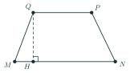
Trong hình thang \(MNPQ\) (\(MN\parallel PQ\)), hai đáy là
Answer: a. The bases are the two parallel sides.
Đáp án a. Hai đáy là hai cạnh song song.
In trapezoid \(DEFG\) (\(DE\parallel FG\)), which segment is a height?
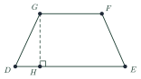
Trong hình thang \(DEFG\) (\(DE\parallel FG\)), đoạn thẳng nào là một đường cao?
Answer: d. \(GH\perp DE\).
Đáp án d. \(GH\perp DE\).
Isosceles trapezoid \(IJKL\) (\(IJ\parallel KL\)) has \(IK=12\) cm. Find \(JL\).
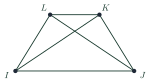
Hình thang cân \(IJKL\) (\(IJ\parallel KL\)) có \(IK=12\) cm. Tính \(JL\).
Answer: c. The diagonals of an isosceles trapezoid are equal.
Đáp án c. Hình thang cân có hai đường chéo bằng nhau.
D2. Self-practice – UnderstandingD2. Tự luyện – Mức Thông hiểu
Isosceles trapezoid \(IJKL\) (\(IJ\parallel KL\)) has \(\widehat{I}=(4x+10)^\circ\) and \(\widehat{J}=(5x-1)^\circ\). Find \(\widehat{I}\).
Hình thang cân \(IJKL\) (\(IJ\parallel KL\)) có \(\widehat{I}=(4x+10)^\circ\) và \(\widehat{J}=(5x-1)^\circ\). Tính \(\widehat{I}\).
Answer: b. Equal base angles: \(4x+10=5x-1\Rightarrow x=11\), so \(\widehat{I}=54^\circ\).
Đáp án b. Hai góc kề một đáy bằng nhau: \(4x+10=5x-1\Rightarrow x=11\), nên \(\widehat{I}=54^\circ\).
Trapezoid \(MNPQ\) (\(MN\parallel PQ\)) has \(\widehat{Q}-\widehat{M}=60^\circ\). Find \(\widehat{Q}\).
Hình thang \(MNPQ\) (\(MN\parallel PQ\)) có \(\widehat{Q}-\widehat{M}=60^\circ\). Tính \(\widehat{Q}\).
Answer: b. \(\widehat{Q}+\widehat{M}=180^\circ\) and their difference is \(60^\circ\): \(\widehat{Q}=(180^\circ+60^\circ):2=120^\circ\).
Đáp án b. \(\widehat{Q}+\widehat{M}=180^\circ\), hiệu bằng \(60^\circ\) nên \(\widehat{Q}=(180^\circ+60^\circ):2=120^\circ\).
Isosceles trapezoid \(MNPQ\) has perimeter 44 cm and bases 22 cm and 8 cm. Find the length of each leg.
Hình thang cân \(MNPQ\) có chu vi 44 cm, hai đáy dài 22 cm và 8 cm. Tính độ dài mỗi cạnh bên.
Answer: d. \((44-22-8):2=7\) cm.
Đáp án d. \((44-22-8):2=7\) cm.
D3. Self-practice – Basic applicationD3. Tự luyện – Mức Vận dụng thấp
Triangle \(RST\) has \(RS=RT\) and \(\widehat{S}=44^\circ\). Points \(U\in RS\), \(V\in RT\) with \(UV\parallel ST\). Quadrilateral \(UVTS\) is an isosceles trapezoid. Find \(\widehat{SUV}\).
Tam giác \(RST\) có \(RS=RT\) và \(\widehat{S}=44^\circ\). Lấy \(U\in RS\), \(V\in RT\) sao cho \(UV\parallel ST\). Tứ giác \(UVTS\) là hình thang cân. Tính \(\widehat{SUV}\).
Answer: b. \(UV\parallel ST\): \(\widehat{SUV}+\widehat{S}=180^\circ\Rightarrow\widehat{SUV}=136^\circ\).
Đáp án b. \(UV\parallel ST\) nên \(\widehat{SUV}+\widehat{S}=180^\circ\Rightarrow\widehat{SUV}=136^\circ\).
Trapezoid \(KLMN\) (\(KL\parallel MN\)) has \(MN=7\) cm. Diagonal \(KM\) bisects \(\widehat{NKL}\). Find \(NK\).
Hình thang \(KLMN\) (\(KL\parallel MN\)) có \(MN=7\) cm, đường chéo \(KM\) là tia phân giác của \(\widehat{NKL}\). Tính \(NK\).
Answer: b. \(\widehat{NMK}=\widehat{MKL}\) (alternate angles) \(=\widehat{NKM}\), so \(\triangle KNM\) is isosceles: \(NK=MN=7\) cm.
Đáp án b. \(\widehat{NMK}=\widehat{MKL}\) (so le trong) \(=\widehat{NKM}\) nên \(\triangle KNM\) cân tại \(N\): \(NK=MN=7\) cm.
Trapezoid \(IJKL\) (\(IJ\parallel KL\)) has \(\widehat{I}=(3x+10)^\circ\) and \(\widehat{L}=(x+10)^\circ\). Find \(\widehat{I}\).
Hình thang \(IJKL\) (\(IJ\parallel KL\)) có \(\widehat{I}=(3x+10)^\circ\) và \(\widehat{L}=(x+10)^\circ\). Tính \(\widehat{I}\).
Answer: b. \(\widehat{I}+\widehat{L}=180^\circ\Rightarrow 4x+20=180\Rightarrow x=40\); \(\widehat{I}=130^\circ\).
Đáp án b. \(\widehat{I}+\widehat{L}=180^\circ\Rightarrow 4x+20=180\Rightarrow x=40\); \(\widehat{I}=130^\circ\).
D4. Self-practice – Advanced applicationD4. Tự luyện – Mức Vận dụng
The side frame of a pedestrian bridge is trapezoid \(ABCD\) (\(AB\parallel CD\)) with \(\widehat{C}=\widehat{D}=60^\circ\), \(AB=8\) m, \(CD=15\) m, \(AD=7\) m. How many meters of steel are needed for its four sides?
Khung một mặt bên của cầu đi bộ là hình thang \(ABCD\) (\(AB\parallel CD\)) có \(\widehat{C}=\widehat{D}=60^\circ\), \(AB=8\) m, \(CD=15\) m, \(AD=7\) m. Cần bao nhiêu mét thép để làm bốn cạnh của khung?
Answer: d. Isosceles trapezoid, so \(BC=AD=7\) m; total \(37\) m.
Đáp án d. Hình thang cân nên \(BC=AD=7\) m; tổng \(37\) m.
A field has the shape of a trapezoid with bases 54 m and 34 m and height 24 m. Find its area.
Một thửa ruộng có dạng hình thang với hai đáy dài 54 m, 34 m và chiều cao 24 m. Tính diện tích thửa ruộng.
Answer: b. \(S=\dfrac{(54+34)\cdot24}{2}=1056\) m².
Đáp án b. \(S=\dfrac{(54+34)\cdot24}{2}=1056\) m².
The front of a roof is an isosceles trapezoid. Each lower corner is \(45^\circ\). What is each upper corner?
Mặt trước của một mái nhà có dạng hình thang cân, mỗi góc ở đáy dưới bằng \(45^\circ\). Mỗi góc ở đáy trên bằng bao nhiêu?
Answer: c. \(180^\circ-45^\circ=135^\circ\).
Đáp án c. \(180^\circ-45^\circ=135^\circ\).
A. Multiple ChoiceA. Trắc nghiệm nhiều lựa chọn
Isosceles trapezoid \(ABCD\) has bases \(AB\) and \(CD\), and \(\widehat{A}=96^\circ\). Find the other angles.
Hình thang cân \(ABCD\) có hai đáy \(AB\), \(CD\) và \(\widehat{A}=96^\circ\). Tính các góc còn lại.
Answer: a. Base angles are equal: \(\widehat{B}=\widehat{A}\); angles along a leg are supplementary: \(\widehat{D}=180^\circ-96^\circ=84^\circ\).
Đáp án a. Hai góc kề một đáy bằng nhau: \(\widehat{B}=\widehat{A}\); hai góc kề một cạnh bên bù nhau: \(\widehat{D}=180^\circ-96^\circ=84^\circ\).
Trapezoid \(PQRS\) has \(PQ\parallel RS\) and \(\widehat{P}=70^\circ\). Find \(\widehat{S}\).
Hình thang \(PQRS\) có \(PQ\parallel RS\) và \(\widehat{P}=70^\circ\). Tính \(\widehat{S}\).
Answer: b. \(\widehat{P}\) and \(\widehat{S}\) are angles along leg \(PS\), so they are supplementary.
Đáp án b. \(\widehat{P}\) và \(\widehat{S}\) là hai góc kề cạnh bên \(PS\) nên bù nhau.
Which property does every isosceles trapezoid have?
Mọi hình thang cân đều có tính chất nào sau đây?
Answer: b. An isosceles trapezoid has equal legs, equal diagonals and equal base angles.
Đáp án b. Hình thang cân có hai cạnh bên bằng nhau, hai đường chéo bằng nhau, hai góc kề một đáy bằng nhau.
B. True or FalseB. Đúng hoặc sai
In every isosceles trapezoid, its two diagonals are perpendicular.
Trong mọi hình thang cân, hai đường chéo vuông góc với nhau.
False. Properties: equal legs, equal diagonals, equal base angles.
Sai. Tính chất: hai cạnh bên bằng nhau, hai đường chéo bằng nhau, hai góc kề một đáy bằng nhau.
Trapezoid \(WXYZ\) (\(WX\parallel YZ\)) has \(WY=XZ\). Then it is an isosceles trapezoid.
Hình thang \(WXYZ\) (\(WX\parallel YZ\)) có \(WY=XZ\). Khi đó nó là hình thang cân.
True. Tests: equal diagonals, or equal angles at one base. Equal legs are not enough (a parallelogram also has equal legs).
Đúng. Dấu hiệu: hai đường chéo bằng nhau, hoặc hai góc kề một đáy bằng nhau. Hai cạnh bên bằng nhau thì chưa đủ (hình bình hành cũng có).
C. Short AnswerC. Trả lời ngắn
Isosceles trapezoid \(KLMN\) (\(KL\parallel MN\)) has \(\widehat{L}=50^\circ\). Find \(\widehat{N}\) in degrees.
Hình thang cân \(KLMN\) (\(KL\parallel MN\)) có \(\widehat{L}=50^\circ\). Tính số đo \(\widehat{N}\) (theo độ).
Enter a number.
Nhập một số.
Answer: 130. \(\widehat{K}=\widehat{L}=50^\circ\), so \(\widehat{N}=180^\circ-50^\circ=130^\circ\).
Đáp số: 130. \(\widehat{K}=\widehat{L}=50^\circ\) nên \(\widehat{N}=180^\circ-50^\circ=130^\circ\).
Isosceles trapezoid \(PQRS\) has bases \(PQ=13\) cm, \(RS=4\) cm and leg \(PS=6\) cm. Find its perimeter (cm).
Hình thang cân \(PQRS\) có hai đáy \(PQ=13\) cm, \(RS=4\) cm và cạnh bên \(PS=6\) cm. Tính chu vi của hình thang (cm).
Enter a number.
Nhập một số.
Answer: 29. \(QR=PS=6\), perimeter \(=13+4+2\cdot6=29\).
Đáp số: 29. \(QR=PS=6\), chu vi \(=13+4+2\cdot6=29\).
D1. Self-practice – RememberingD1. Tự luyện – Mức Nhận biết
In trapezoid \(WXYZ\) (\(WX\parallel YZ\)), which segments are the bases?
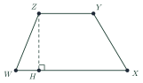
Trong hình thang \(WXYZ\) (\(WX\parallel YZ\)), hai đáy là
Answer: d. The bases are the two parallel sides.
Đáp án d. Hai đáy là hai cạnh song song.
In trapezoid \(MNPQ\) (\(MN\parallel PQ\)), which segment is a height?
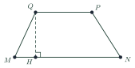
Trong hình thang \(MNPQ\) (\(MN\parallel PQ\)), đoạn thẳng nào là một đường cao?
Answer: c. \(QH\perp MN\).
Đáp án c. \(QH\perp MN\).
Isosceles trapezoid \(ABCD\) (\(AB\parallel CD\)) has \(AC=10\) cm. Find \(BD\).
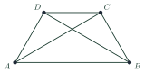
Hình thang cân \(ABCD\) (\(AB\parallel CD\)) có \(AC=10\) cm. Tính \(BD\).
Answer: d. The diagonals of an isosceles trapezoid are equal.
Đáp án d. Hình thang cân có hai đường chéo bằng nhau.
D2. Self-practice – UnderstandingD2. Tự luyện – Mức Thông hiểu
Isosceles trapezoid \(IJKL\) (\(IJ\parallel KL\)) has \(\widehat{I}=(3x+20)^\circ\) and \(\widehat{J}=(6x-4)^\circ\). Find \(\widehat{I}\).
Hình thang cân \(IJKL\) (\(IJ\parallel KL\)) có \(\widehat{I}=(3x+20)^\circ\) và \(\widehat{J}=(6x-4)^\circ\). Tính \(\widehat{I}\).
Answer: d. Equal base angles: \(3x+20=6x-4\Rightarrow x=8\), so \(\widehat{I}=44^\circ\).
Đáp án d. Hai góc kề một đáy bằng nhau: \(3x+20=6x-4\Rightarrow x=8\), nên \(\widehat{I}=44^\circ\).
Trapezoid \(EFGH\) (\(EF\parallel GH\)) has \(\widehat{H}-\widehat{E}=30^\circ\). Find \(\widehat{H}\).
Hình thang \(EFGH\) (\(EF\parallel GH\)) có \(\widehat{H}-\widehat{E}=30^\circ\). Tính \(\widehat{H}\).
Answer: a. \(\widehat{H}+\widehat{E}=180^\circ\) and their difference is \(30^\circ\): \(\widehat{H}=(180^\circ+30^\circ):2=105^\circ\).
Đáp án a. \(\widehat{H}+\widehat{E}=180^\circ\), hiệu bằng \(30^\circ\) nên \(\widehat{H}=(180^\circ+30^\circ):2=105^\circ\).
Isosceles trapezoid \(ABCD\) has perimeter 29 cm and bases 10 cm and 5 cm. Find the length of each leg.
Hình thang cân \(ABCD\) có chu vi 29 cm, hai đáy dài 10 cm và 5 cm. Tính độ dài mỗi cạnh bên.
Answer: d. \((29-10-5):2=7\) cm.
Đáp án d. \((29-10-5):2=7\) cm.
D3. Self-practice – Basic applicationD3. Tự luyện – Mức Vận dụng thấp
Triangle \(RST\) has \(RS=RT\) and \(\widehat{S}=62^\circ\). Points \(U\in RS\), \(V\in RT\) with \(UV\parallel ST\). Quadrilateral \(UVTS\) is an isosceles trapezoid. Find \(\widehat{SUV}\).
Tam giác \(RST\) có \(RS=RT\) và \(\widehat{S}=62^\circ\). Lấy \(U\in RS\), \(V\in RT\) sao cho \(UV\parallel ST\). Tứ giác \(UVTS\) là hình thang cân. Tính \(\widehat{SUV}\).
Answer: a. \(UV\parallel ST\): \(\widehat{SUV}+\widehat{S}=180^\circ\Rightarrow\widehat{SUV}=118^\circ\).
Đáp án a. \(UV\parallel ST\) nên \(\widehat{SUV}+\widehat{S}=180^\circ\Rightarrow\widehat{SUV}=118^\circ\).
Trapezoid \(EFGH\) (\(EF\parallel GH\)) has \(GH=6\) cm. Diagonal \(EG\) bisects \(\widehat{HEF}\). Find \(HE\).
Hình thang \(EFGH\) (\(EF\parallel GH\)) có \(GH=6\) cm, đường chéo \(EG\) là tia phân giác của \(\widehat{HEF}\). Tính \(HE\).
Answer: b. \(\widehat{HGE}=\widehat{GEF}\) (alternate angles) \(=\widehat{HEG}\), so \(\triangle EHG\) is isosceles: \(HE=GH=6\) cm.
Đáp án b. \(\widehat{HGE}=\widehat{GEF}\) (so le trong) \(=\widehat{HEG}\) nên \(\triangle EHG\) cân tại \(H\): \(HE=GH=6\) cm.
Trapezoid \(DEFG\) (\(DE\parallel FG\)) has \(\widehat{D}=(x+45)^\circ\) and \(\widehat{G}=(2x+60)^\circ\). Find \(\widehat{D}\).
Hình thang \(DEFG\) (\(DE\parallel FG\)) có \(\widehat{D}=(x+45)^\circ\) và \(\widehat{G}=(2x+60)^\circ\). Tính \(\widehat{D}\).
Answer: a. \(\widehat{D}+\widehat{G}=180^\circ\Rightarrow 3x+105=180\Rightarrow x=25\); \(\widehat{D}=70^\circ\).
Đáp án a. \(\widehat{D}+\widehat{G}=180^\circ\Rightarrow 3x+105=180\Rightarrow x=25\); \(\widehat{D}=70^\circ\).
D4. Self-practice – Advanced applicationD4. Tự luyện – Mức Vận dụng
The side frame of a pedestrian bridge is trapezoid \(ABCD\) with \(AB\parallel CD\) and \(\widehat{C}=\widehat{D}=55^\circ\). Find the angle \(\widehat{DAB}\) at the upper base.
Khung một mặt bên của cầu đi bộ là hình thang \(ABCD\) (\(AB\parallel CD\)) có \(\widehat{C}=\widehat{D}=55^\circ\). Tính góc \(\widehat{DAB}\) ở đáy trên.
Answer: a. \(\widehat{DAB}=180^\circ-55^\circ=125^\circ\).
Đáp án a. \(\widehat{DAB}=180^\circ-55^\circ=125^\circ\).
A field has the shape of a trapezoid with bases 40 m and 32 m and height 30 m. Find its area.
Một thửa ruộng có dạng hình thang với hai đáy dài 40 m, 32 m và chiều cao 30 m. Tính diện tích thửa ruộng.
Answer: b. \(S=\dfrac{(40+32)\cdot30}{2}=1080\) m².
Đáp án b. \(S=\dfrac{(40+32)\cdot30}{2}=1080\) m².
The front of a roof is an isosceles trapezoid. Each lower corner is \(60^\circ\). What is each upper corner?
Mặt trước của một mái nhà có dạng hình thang cân, mỗi góc ở đáy dưới bằng \(60^\circ\). Mỗi góc ở đáy trên bằng bao nhiêu?
Answer: a. \(180^\circ-60^\circ=120^\circ\).
Đáp án a. \(180^\circ-60^\circ=120^\circ\).
8Common MistakesLỗi thường gặp
Pairing the wrong angles. In trapezoid \(ABCD\) (\(AB\parallel CD\)), \(\widehat{A}+\widehat{D}=180^\circ\), not \(\widehat{A}+\widehat{C}\).
Ghép sai cặp góc. Trong hình thang \(ABCD\) (\(AB\parallel CD\)), \(\widehat{A}+\widehat{D}=180^\circ\), không phải \(\widehat{A}+\widehat{C}\).
Equal legs ⇒ isosceles? Not always (parallelograms).
Hai cạnh bên bằng nhau ⇒ hình thang cân? Chưa chắc (hình bình hành).
Equal diagonals in any trapezoid. Only isosceles trapezoids have equal diagonals.
Cho rằng mọi hình thang có hai đường chéo bằng nhau. Chỉ hình thang cân mới có.
Forgetting the right-angle mark on a height. A height is perpendicular to the bases.
Quên kí hiệu góc vuông ở đường cao. Đường cao vuông góc với hai đáy.
9Lesson SummaryTổng kết
Trapezoid: two parallel opposite sides (bases); angles along a leg are supplementary.
Hình thang: hai cạnh đối song song (hai đáy); hai góc kề một cạnh bên bù nhau.
Isosceles trapezoid: equal base angles; equal legs; equal diagonals.
Hình thang cân: hai góc kề một đáy bằng nhau; hai cạnh bên bằng nhau; hai đường chéo bằng nhau.
Tests: equal base angles, or equal diagonals.
Dấu hiệu: hai góc kề một đáy bằng nhau, hoặc hai đường chéo bằng nhau.
Key English: trapezoid, isosceles trapezoid, base, leg, height, base angle.
Thuật ngữ cần nhớ (chạm vào để xem tiếng Anh): hình thang, hình thang cân, đáy, cạnh bên, đường cao, góc kề một đáy.